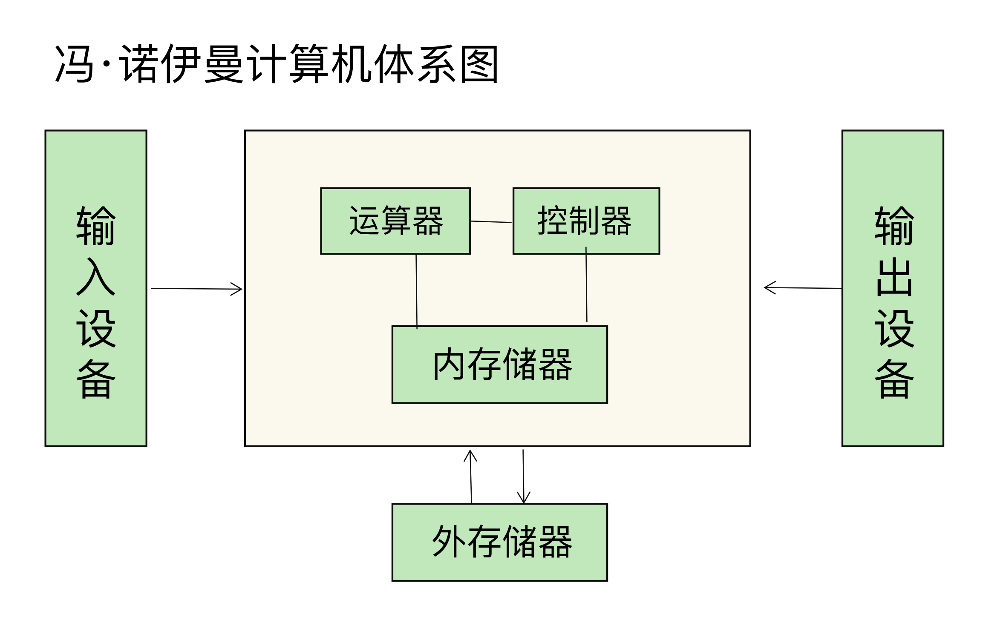
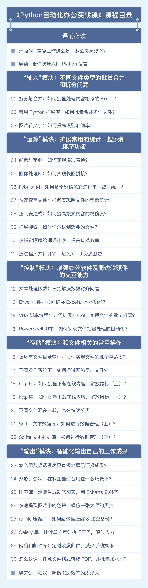

- 00 导读 入门Python的必备知识.md.html
- 00 开篇词 重复工作这么多，怎样才能提高工作效率？.md.html
- 01 拆分与合并：如何快速地批量处理内容相似的Excel？.md.html
- 02 善用Python扩展库：如何批量合并多个文档？.md.html
- 03 图片转文字：如何提高识别准确率？.md.html
- 04 函数与字典：如何实现多次替换.md.html
- 05 图像处理库：如何实现长图拼接？.md.html
- 06 jieba分词：如何基于感情色彩进行单词数量统计？.md.html
- 07 快速读写文件：如何实现跨文件的字数统计？.md.html
- 08 正则表达式：如何提高搜索内容的精确度？.md.html
- 09 扩展搜索：如何快速找到想要的文件？.md.html
- 10 按指定顺序给词语排序，提高查找效率.md.html
- 11 通过程序并行计算，避免CPU资源浪费.md.html
- 12 文本处理函数：三招解决数据对齐问题.md.html
- 13 Excel插件：如何扩展Excel的基本功能？.md.html
- 14 VBA脚本编程：如何扩展Excel，实现文件的批量打印？.md.html
- 15 PowerShell脚本：如何实现文件批量处理的自动化？.md.html
- 16 循环与文件目录管理：如何实现文件的批量重命名？.md.html
- 17 不同操作系统下，如何通过网络同步文件？.md.html
- 18 http库：如何批量下载在线内容，解放鼠标（上）？.md.html
- 19 http库：如何批量下载在线内容，解放鼠标（下）？.md.html
- 20 不同文件混在一起，怎么快速分类？.md.html
- 21 SQLite文本数据库：如何进行数据管理（上）？.md.html
- 22 SQLite文本数据库：如何进行数据管理（下）？.md.html
- 23 怎么用数据透视表更直观地展示汇报成果？.md.html
- 24 条形、饼状、柱状图最适合用在什么场景下？.md.html
- 25 图表库：想要生成动态图表，用Echarts就够了.md.html
- 26 快速提取图片中的色块，模仿一张大师的照片.md.html
- 27 zipfile压缩库：如何给数据压缩&加密备份？.md.html
- 28 Celery库：让计算机定时执行任务，解放人力.md.html
- 29 网络和邮件库：定时收发邮件，减少手动操作.md.html
- 30 怎么快速把任意文件格式转成PDF，并批量加水印？.md.html
- 春节特别放送1 实体水果店转线上销售的数据统计问题.md.html
- 春节特别放送2 用自顶至底的思路解决数据统计问题.md.html
- 春节特别放送3 揭晓项目作业的答案.md.html
- 结束语 和我一起成为10X效率职场人.md.html
- 捐赠
00 开篇词 重复工作这么多，怎样才能提高工作效率？
你好，我是尹会生。欢迎你来到《Python自动化办公实战课》，在接下来的3个月时间里，我们一起通过办公自动化来提升工作效率。
工作15年来，我在游戏公司做过技术总监，也在新浪网做过技术经理，负责公司运维平台建设和相关工具的开发工作，几乎每天都在和Linux打交道。
在这门课之前，我已经在极客时间开设了两门视频课程：《零基础学 Python》和《Linux实战技能100讲》，为Python语言的初学者和运维工程师、开发工程师提供系统化的课程，目的就是解决他们在学习、实践中遇到的80%的问题。
目前，这两门课程已经有3万多名同学加入学习了。看到这些内容能够切实地帮助同学们解决他们的问题，我非常开心，也很受鼓舞。
所以，这次我又为你带来了《Python自动化办公实战课》这门专栏课程。我总结了工作这些年来切身经历的、经常被问到的办公效率低下问题，以及对应的解决方案，我会把它们全部分享给你。
希望你学完这门课，能够告别重复、机械的工作，提高工作效率，同时也能把时间花在刀刃上，去提升自己的核心竞争力。
说到这里，你脑中是不是回忆起了一幕幕的低效工作场景：
- 需要对Excel文件中的内容进行拆分和合并，你要一个个手动拆分再合并；
- 文件夹里有大量图片需要重命名，你不得不挨个儿点击一张张图片，再重新命名；
- 网络中有大量新闻和图片需要下载，你就要手动把每个网页另存为文件；
- 需要把数据快速生成自己想要的图形，一个一个图形参数来设置；
- 需要让计算机在凌晨执行任务，你只能让闹钟在半夜把自己叫醒，人工执行，观察执行结果；
- ……
这些工作其实难度都不大，但它们有一个共同的特点，就是重复、机械的手工劳动，非常耗费时间和精力。实际上，我们换一种方法，就可以快速完成这些工作，节省数倍的时间。如你所想，这些都是我要通过这门课帮助你解决的问题。
那具体怎么解决呢？
解决这些低效问题，我的思路是什么？
其实，我们现在的办公环境，已经基本实现自动化了，Word、Excel、邮件、思维导图等各种各样的工具都非常顺手，表格的合并拆分、使用快捷键进行文件的各种操作等各种技巧也是随手一搜就能得到。但相应的问题也就来了，我们怎么用好这些工具、怎么内化这些技巧呢？
静下心来想一下，现在我们掌握的绝大多数办公工具和技巧，都是基于计算机的。那这个问题，就可以用计算机的思维从根儿上去解决了。所以，我们不妨引入《设计模式》的思路：代码封装得越“高级”，解决的问题就越具体；越深入计算机底层，解决的问题就越通用。
如果你暂时不理解这句话的意思也没关系，只需要明白这样一点就可以：要想快速提高办公效率，解决方法不在各种小技巧和小软件，而在于理解底层逻辑，以及加快人和计算机的交互过程，能够高效地解决输入（格式转换）、输出（格式统一）、控制（内容处理）、运算（查找、替换）、存储（文件保存和绘图），自然就能解决大部分的效率问题。
只要对计算机的体系结构稍有了解，你就会听说过冯 · 诺依曼结构：计算机由运算器、控制器、存储器、输入设备和输出设备这五部分组成。所以，我们解决用好自动化办公工具和技巧的方法，和经典的冯 · 诺依曼结构是相吻合的，就是理解计算机的底层逻辑，从而提升我们和计算机交互的效率。
-

说到这里，我可以给你分享一段我的工作经历。我曾经维护过日活超过3亿用户的微博私信平台，你可以看看我是怎么用计算机的思维，来提高自己和团队的工作效率的。
我们在一个业务模块中，需要批量替换200台服务器中的软件配置，而且每个服务器都有一个文件，需要将第五行内容, 由原有的接口版本v1统一替换成v2。
面对这样的需求，其实有很多挑战在里面。第一个是替换的实效性，如果手动替换接口版本，由于服务器过多，用户就有可能访问到还没来得及替换的接口上，如后就有可能看到自己的消息是已读状态，一刷新页面，又变成了消息未读。第二个就是服务器数量很多，手动替换还没做完，下一个需求就接着来了。第三，手动替换这么多服务，非常容易出现拼写错误，也就是我们常说的手误，导致你要再花更多的时间来排捉Bug。
这样很低效对不对？如果使用Python的话，我们就可以从3个方面来提升效率。
第一，用Python程序代替一个个的手动操作，实现文字内容的替换，这样就会解放人力，你的工作压力会减轻很多。- 第二，我可以通过Python批量控制服务器，让服务器自动完成这些工作。- 第三个就是灵活性方面的优化了, 我们可以让这段程序定时运行，又可以让它们能够同时运行，从一个一个执行，到五个五个执行。
这三方面的优化，我在课程中都会为你讲解到。
你可能会问，编程语言有那么多，比如Java、Go等等，我为什么要选择Python呢？或者说，为什么我会认为，Python非常适合用来提升我们的工作效率呢？如果你不会Python，可以学这门课吗？
不要着急，我来和你说下Python语言的几个特点，你就能明白了。
为什么选择用Python来解决？
首先，Python的用法非常简洁、灵活，就像汉语、英语这类自然语言一样容易理解和使用。世界著名程序员、软件开源运动旗手埃里克·雷蒙（Eric S. Raymond）在《如何成为一名黑客》中说道：
如果你不懂任何计算机语言，我建议从 Python 入门。它设计整洁，文档良好，对初学者很友好。
Python用法简单，但是对于初学者，尤其是没有Python基础的话，那该怎么来学这门课呢？其实这也是我在设计这门课时重点考虑的一个问题。所以不用担心，我为你准备好了0基础的学习路径。
第一，导读是整个课程的基石。导读部分我会为你讲解Python最基础且最重要的五大语法部分，让你对Python有一个初步的了解，能够看懂基本的Python代码。这也是你入门Python学习的第一步。
同时，导读在整个课程中会起到一个引领的作用。其中的语法知识我会在之后的课程中讲解，所以在学习时如果有不懂的话，仍然可以回过头来看导读部分。
第二，一定要动手来操作，毕竟看一遍我的操作，跟你自己操作是不一样的。
第三，如果你有时间的话，我还建议你去抄写每一段代码。要知道，看一遍课程和把看的东西写出来的感觉是完全不一样的。这个建议我在之前的《零基础学Python》这门课中也提过，很多用户反映学习效果确实不错，提升速度很快。
问题都是在不断学习中解决掉的，所以最后我也建议你遇到问题不怕畏惧，跟着课程来慢慢学习就行了。
其次，Python的扩展库很丰富，可以满足非常多的复杂场景的需求，能够替代非常多的手工操作。这也是Python相对于其他编程语言的一大优势。
目前，Python的扩展库已经覆盖了文件、声音、视频、数据科学、深度学习等众多行业。通过这些扩展库，我们可以用Python连接Excel、Word、邮件等常用办公组件，轻松应对各类工作场景，不用自己手动写很多功能代码了。而连接方法也很简单，以操作Word文档为例，你只要掌握下面这行代码就可以了：
import docx
通过这样一行简单的代码，你的Python就能支持Word中的文字、字体、段落、样式、表格等各种功能进行读写操作了，当然了，为了实现你的各种定制需求，还需要继续编写代码（这里的优点是直接支持，其他语言是要先像是操作压缩文件一样，对docx格式解压缩，再对xml文件进行处理，非常复杂）。
最后，Python还有一个你无法抗拒的优点，那就是它的跨平台性。
也许有一天，你用的电脑的操作系统，从macOS变成了Windows，或者从Windows变成了macOS，那也完全不用担心。Python的跨平台特性，可以帮你做到不用修改任何一行代码，就可以让已经写好的程序直接在新的平台上运行。
总结来说，Python的简洁、扩展库丰富和跨平台特性这三点，就保证了你可以轻松学会这门课，用Python去实现办公自动化，提升自己的工作效率。
说了这么多，哪些工作可以用Python实现自动化，而我又会怎么给你讲这门课呢？
这门课是怎么设计的？
在开头的时候我也说了，要用计算机的思维去解决办公自动化工具和技巧的问题，所以我就把常见的30个机械、重复的工作场景，按照任务类型划分成了输入、运算、控制、存储和输出这5个模块。
“输入”模块：解决不同文件类型的批量合并和拆分问题
这类任务往往包含了格式相似的大量文件，比如Word、Excel、Txt文件，我会带着你用Python去进行批量合并和拆分。
“运算”模块：扩展常用的统计、搜索和排序功能
很多软件自带的统计、搜索和排序功能，都很好用，但不支持在多个文件或者跨类型文件中使用。所以，在这个模块我们要学习的就是，怎么通过Python进行扩展，让这些好用、常用的功能，可以支持多个文件或不同类型的文件。
“控制”模块：通过插件的方式增强办公软件以及周边软件、硬件的交互能力
办公软件的核心功能，通常是支持文字和表格等内容的相关操作，对控制外部设备相对较薄弱。例如，Word本身是不支持批量打印Word文件的，但批量打印又是一个常见的需求。这个需求，就可以通过脚本化来实现，达到打印自动化的目的。
“存储”模块：和文件相关的很多常用操作部分
在工作中，我们经常会面对这么几种需求：需要对大量文件进行重命名；需要通过网络批量下载视频和图片；需要在海量文件中快速找到自己想要的文件；等等。
这些需求最大的问题，就是我们需要手工重复操作，或者自带工具不好用。那么利用Python和文件、网络功能相结合，就完全可以实现目录下的批量改名、文件的批量下载，免去了手工重复操作的问题。
对于系统自带的文件查找工具来说，速度慢而且不够简洁，那我们可以使用Python根据自己定义的目录搜索，加快搜索文件的效率。
“输出”模块：智能化输出自己的工作成果
在这一部分，我要教你更直观和更智能地输出自己的工作成果。比如说你交付给同事的数据，可以通过Python一键转为图形，也可以根据你的需要将图形采用图片或网页的形式展示给你的同事，提高工作汇报的效率，更直观地展示自己的工作成果。

在讲解这5个模块、30个常见的办公场景的效率提升方法时，我还会带你剖析它们背后的原理，和你展示我分解任务、解决问题的思路。
因为提升办公效率的方法和技巧真的是非常非常多，但如果我们没能把这些方法和技巧做系统的梳理，那它们就是孤立的存在，知道得再多，也没办法根据自己的工作场景灵活运用。
如果到这里，你还是担心自己不会Python就学不会这门课、就没办法提升自己工作效率的话，我还可以再给你吃一颗定心丸，这也是我额外送你的一份礼物：在每节课的最后，我都会给你交付一个可运行的小程序。你只需要调整保存路径和几个简单的参数，就可以在自己的电脑上运行，就可以去应对你实际工作中相似场景的重复工作，提升自己的办公效率。
所以，不但能用Python让你的工作效率翻无数倍，还可以收获编程思维、解决问题的思路，以及30个小程序。
最后，我们来一起立个Flag吧：通过三个月的学习，让自己成为10X职场人！也欢迎你邀请你的小伙伴们一起来学习，共同成长！
编辑小提示：专栏的完整代码位置是https://github.com/wilsonyin123/python_productivity，可点击链接下载查看。或者通过[网盘链接](https://pan.baidu.com/s/1UvEKDCGnU6yb0a7gHLSE4Q?pwd=5wf1)提取后下载，提取码: 5wf1。
© 2019 - 2023 Liangliang Lee. Powered by gin and hexo-theme-book.